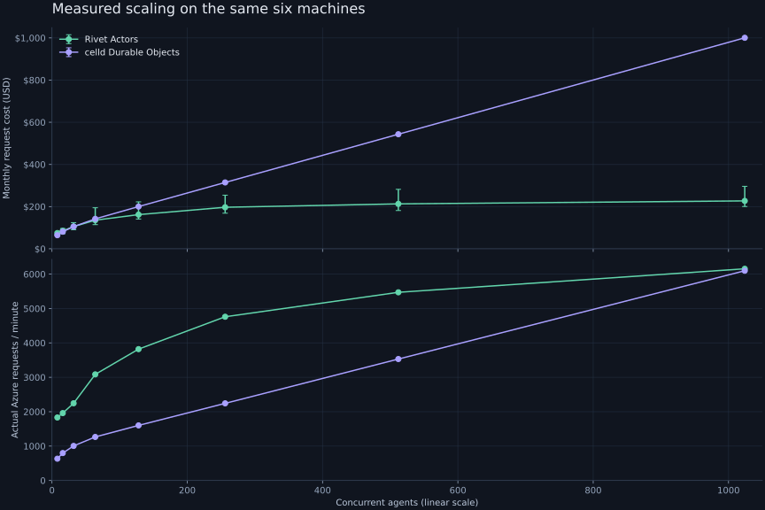
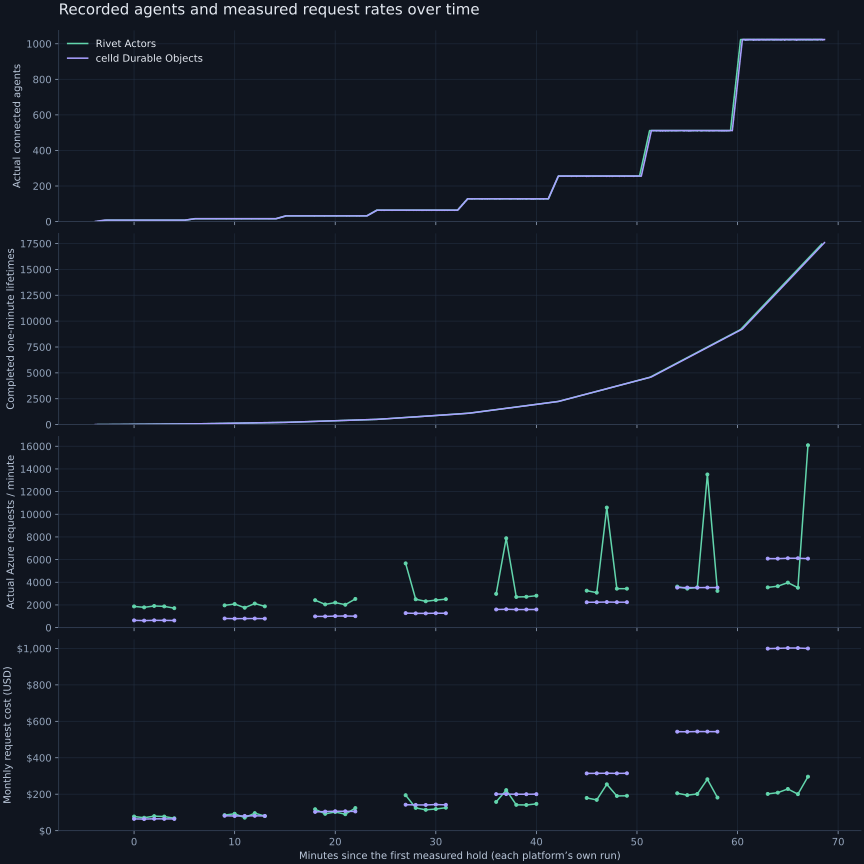

Actual Rivet + actual celld · Azure Blob Storage · churn-60s-20261107
Every agent stays awake for 60 seconds, then sleeps with its SQLite data retained. A fresh agent replaces it; replacements are staggered throughout the minute. Every agent performs one SQLite write every 10 seconds (±20% jitter), rotating over 16 rows. Rivet explicitly sleeps each retired actor; celld closes its WebSocket and uses a one-second idle eviction timeout. Neither fixture deletes retired data.
Hold 8, 16, 32, 64, 128, 256, 512 and 1,024 concurrent agents. After each increase, settle for at least 120 seconds, then measure five complete UTC minutes. The points below use only those measured holds. All levels completed continuous one-minute replacements with zero client errors. The table below shows actual mean connected populations, including the brief gaps while replacements connect.
Both platforms ran sequentially on the same six Azure D16as_v7 VMs in eastus2 zone 1 (16 vCPUs each), using the same 1 TiB Premium SSD v2 disks and two separate load-generator VMs. Rivet Engine and its runners share those six machines. Each platform has a dedicated Standard LRS Blob account in eastus2.
Rivet keeps three replicas of every write, spread evenly across the nodes. celld: six nodes with its default fleet durability. Versions: Rivet Engine / RivetKit 3.0.0-preview.2; celld 0.6.3; Node 24.10.0.
Cumulative request cost across the 40 measured minutes per platform: Rivet $0.136901; celld $0.279767, using the same S3 rates.
Points are measured five-minute averages. Whiskers show the lowest and highest one-minute rates within each hold. Both axes are linear.

| Concurrent agents | Rivet request cost / month | celld request cost / month | Rivet storage / month | celld storage / month |
|---|---|---|---|---|
| 8 | $74.64 | $64.32 | $0.000038 | $0.000004 |
| 16 | $85.02 | $80.93 | $0.000123 | $0.000011 |
| 32 | $105.26 | $105.09 | $0.000329 | $0.000024 |
| 64 | $135.63 | $141.82 | $0.000734 | $0.000054 |
| 128 | $161.93 | $200.17 | $0.001564 | $0.000113 |
| 256 | $196.83 | $314.55 | $0.003159 | $0.000222 |
| 512 | $212.89 | $543.27 | $0.006487 | $0.000448 |
| 1024 | $227.05 | $1,000.61 | $0.013269 | $0.000899 |
Connected agents come from the clients once per second. Object-store requests come from Azure Monitor once per minute. Gaps in the request panels are settling and between-hold inventory periods. The lower panel prices those recorded requests; monthly values are projections of that minute’s rate.

| Target concurrency | Platform | Mean connected | Completed in five minutes | Lifetime range (seconds) | Total agents created by end |
|---|---|---|---|---|---|
| 8 | Rivet Actors | 8.00 | 40 | 60.000–60.002 | 69 |
| 16 | Rivet Actors | 16.00 | 80 | 60.000–60.002 | 212 |
| 32 | Rivet Actors | 32.00 | 160 | 60.000–60.002 | 498 |
| 64 | Rivet Actors | 64.00 | 320 | 60.000–60.002 | 1,070 |
| 128 | Rivet Actors | 127.95 | 640 | 60.000–60.002 | 2,212 |
| 256 | Rivet Actors | 255.95 | 1,279 | 60.000–60.002 | 4,492 |
| 512 | Rivet Actors | 511.91 | 2,559 | 60.000–60.002 | 9,035 |
| 1024 | Rivet Actors | 1023.82 | 5,119 | 60.000–60.002 | 18,097 |
| 8 | celld Durable Objects | 8.00 | 40 | 60.000–60.002 | 71 |
| 16 | celld Durable Objects | 15.98 | 80 | 60.000–60.002 | 214 |
| 32 | celld Durable Objects | 31.98 | 160 | 60.000–60.002 | 500 |
| 64 | celld Durable Objects | 63.94 | 320 | 60.000–60.011 | 1,071 |
| 128 | celld Durable Objects | 127.90 | 640 | 60.000–60.002 | 2,212 |
| 256 | celld Durable Objects | 255.80 | 1,280 | 60.000–60.015 | 4,493 |
| 512 | celld Durable Objects | 511.66 | 2,558 | 60.000–60.083 | 8,986 |
| 1024 | celld Durable Objects | 1023.35 | 5,117 | 60.000–60.038 | 17,957 |
These are complete account-level Blob request counts during each hold, including background coordination, storage work and incidental diagnostic reads. They are not inferred from SQLite commits. Scroll the tables horizontally to see every API and the storage totals.
| Agents | SQLite writes | GetBlob | PutBlob | ListBlobs | GetBlobProperties | DeleteBlob | BatchDeleteBlob | BatchRequest | CreateContainer | GetBlobServiceProperties | GetContainerProperties | Request cost | Blob objects | Stored MB | Storage / month |
|---|---|---|---|---|---|---|---|---|---|---|---|---|---|---|---|
| 8 | 240 | 8,101 | 876 | 180 | 0 | 0 | 0 | 0 | 0 | 0 | 0 | $0.008520 | 725 | 2.08 | $0.000038 |
| 16 | 469 | 8,539 | 1,078 | 180 | 0 | 0 | 0 | 0 | 0 | 0 | 0 | $0.009706 | 1,182 | 6.71 | $0.000123 |
| 32 | 969 | 9,590 | 1,456 | 180 | 0 | 0 | 0 | 0 | 0 | 0 | 0 | $0.012016 | 1,951 | 17.86 | $0.000329 |
| 64 | 1,919 | 11,269 | 1,896 | 299 | 0 | 0 | 981 | 981 | 0 | 0 | 0 | $0.015483 | 3,021 | 39.91 | $0.000734 |
| 128 | 3,844 | 12,900 | 2,365 | 300 | 0 | 0 | 1,767 | 1,767 | 0 | 0 | 0 | $0.018485 | 4,190 | 85.00 | $0.001564 |
| 256 | 7,694 | 14,923 | 3,000 | 300 | 0 | 0 | 2,791 | 2,791 | 0 | 0 | 0 | $0.022469 | 5,322 | 171.69 | $0.003159 |
| 512 | 15,395 | 15,970 | 3,281 | 302 | 0 | 0 | 3,903 | 3,903 | 0 | 0 | 0 | $0.024303 | 6,096 | 352.55 | $0.006487 |
| 1024 | 30,753 | 16,985 | 3,525 | 300 | 0 | 0 | 4,985 | 4,985 | 0 | 0 | 0 | $0.025919 | 6,353 | 721.16 | $0.013269 |
| Agents | SQLite writes | GetBlob | PutBlob | ListBlobs | GetBlobProperties | DeleteBlob | BatchDeleteBlob | BatchRequest | CreateContainer | GetBlobServiceProperties | GetContainerProperties | Request cost | Blob objects | Stored MB | Storage / month |
|---|---|---|---|---|---|---|---|---|---|---|---|---|---|---|---|
| 8 | 241 | 1,520 | 1,019 | 328 | 0 | 0 | 264 | 35 | 0 | 0 | 0 | $0.007343 | 185 | 0.21 | $0.000004 |
| 16 | 467 | 1,759 | 1,300 | 407 | 0 | 0 | 463 | 58 | 0 | 0 | 0 | $0.009239 | 509 | 0.60 | $0.000011 |
| 32 | 968 | 2,028 | 1,674 | 563 | 0 | 0 | 698 | 60 | 0 | 0 | 0 | $0.011996 | 1,082 | 1.32 | $0.000024 |
| 64 | 1,926 | 2,374 | 2,164 | 884 | 0 | 0 | 848 | 60 | 0 | 0 | 0 | $0.016190 | 2,284 | 2.91 | $0.000054 |
| 128 | 3,846 | 2,702 | 2,835 | 1,519 | 0 | 0 | 891 | 60 | 0 | 0 | 0 | $0.022851 | 4,579 | 6.13 | $0.000113 |
| 256 | 7,674 | 3,343 | 4,116 | 2,798 | 0 | 0 | 896 | 60 | 0 | 0 | 0 | $0.035907 | 8,999 | 12.04 | $0.000222 |
| 512 | 15,399 | 4,667 | 6,670 | 5,360 | 0 | 0 | 899 | 60 | 0 | 0 | 0 | $0.062017 | 17,837 | 24.35 | $0.000448 |
| 1024 | 30,744 | 7,274 | 11,785 | 10,478 | 0 | 0 | 898 | 60 | 0 | 0 | 0 | $0.114225 | 35,430 | 48.87 | $0.000899 |
These are S3-priced equivalents of measured Azure Blob requests: GET/HEAD at $0.0004 per 1,000; PUT/LIST at $0.005 per 1,000; deletes at $0. Monthly request cost = measured request cost ÷ measured minutes × 43,800 minutes (730 hours). Azure API counts are preserved above; Blob Batch deletion requests are assigned the zero-cost S3 delete rate. This is request repricing, not an AWS deployment measurement or an Azure invoice.
The charts show request charges. Stored bytes are inventoried just after each hold, outside its measured request window; the storage column prices that snapshot at $18.40 per decimal TB-month if that size were held for a month. Retained data can continue to grow; this column does not assume a month of future data growth. Compute, memory and egress charges are separate.
Rivet Actors dashboard · celld Durable Objects dashboard
Inspect the concurrent populations, acknowledged writes, zero client errors and host resources. Rivet’s dashboard also shows four maintainers and twelve replicas on every node.
README and run commands · Request totals CSV · Minute samples CSV · Recorded lifetimes CSV · Summary JSON · Raw result directory
Generated from archived measurements with python3 report/build.py churn-60s-20261107. No fitted celld model or interpolated request counts.